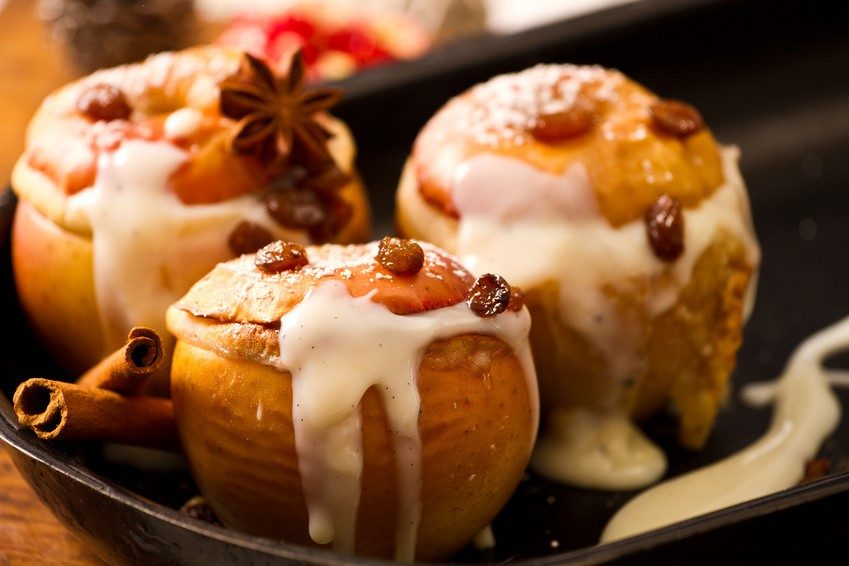
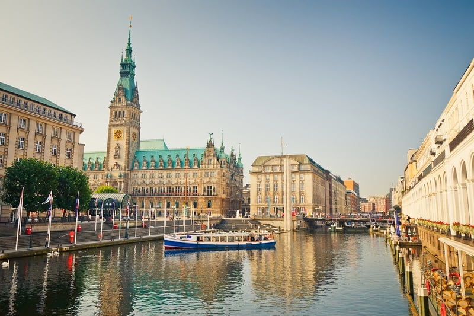
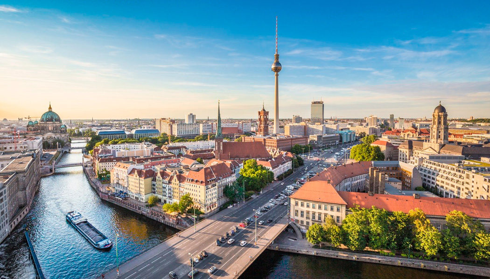

Alemanha
Alemanha é um país europeu conhecido por sua grande força econômica, sendo o país mais rico do continente e com grande protagonismo político na União Europeia. É o país mais populoso (sem contar a Rússia) e rico da Europa, tendo grande relevância nas decisões regionais e mundiais nos mais variados níveis: política, economia, aspectos sociais, entre outros. A língua fala neste país é o alemão.
Comida típica: Bratapfel
A maçã recheada ou Bratapfel em alemão é um prato saboroso e geralmente servido como sobremesa. Especialmente nas festas de fim de ano e Natal. Consiste em uma maçã assada no forno até ficar macia.
O núcleo geralmente é removido e a parte interior é recheada com recheios e temperos doces ou salgados. Peras e marmelos podem ser preparados da mesma maneira.
Ponto turístico: Hamburgo
Hamburgo é uma cidade localizada na região norte da Alemanha e apelidada de “o portal para o mundo”. Desde suas origens medievais, Hamburgo tem se posicionado como um centro portuário e cosmopolita de relativa importância.
Aqui está tudo que você precisa saber sobre o passado aventureiro e conturbado de uma das metrópoles mais badaladas da Alemanha.
A capital da Alemanha: Berlim
Berlim é a cidade mais visitada do país. Por ser a capital e abrigar resquícios do Muro de Berlim, ícone histórico da Guerra Fria, essa cidade ainda conta com o Memorial aos Judeus, importante construção para relembrar uma parte triste da história mundial.
Além de Berlim, outra cidade cheia de conhecimento histórico é Munique, que abriga o Distrito dos Museus, com obras de grandes artistas, entre eles Van Gogh e Leonardo da Vinci. Essa cidade é palco da maior e mais famosa festa cervejeira do mundo, a Oktoberfest.